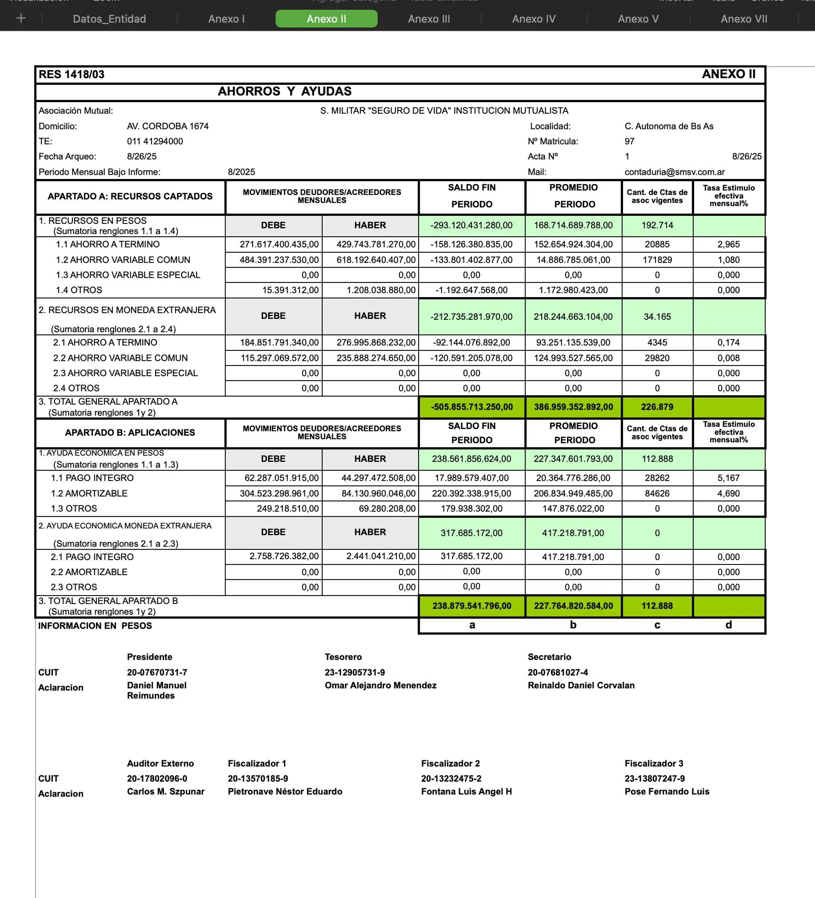
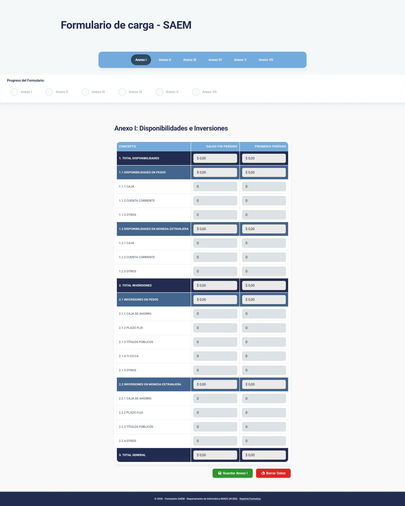
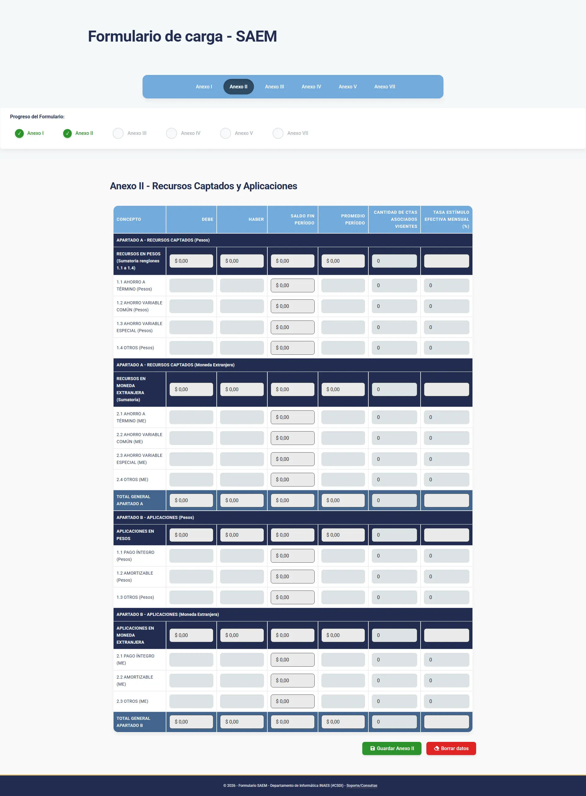
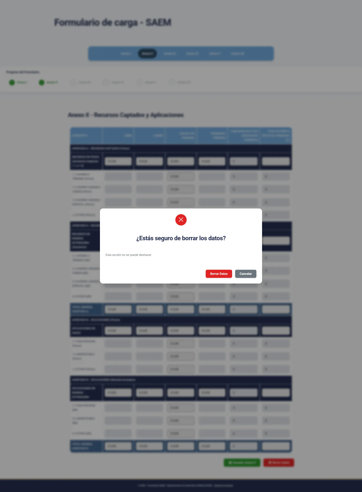

Transforming a Critical Excel Workflow into a Scalable Web Application
Project Overview
I led the design and development of a web application that replaced a legacy Excel-based workflow used for legally and financially critical reporting.
The system is used by over 2,500 external users and internal analysts, reducing data entry time, eliminating file duplication, and improving reliability and traceability.
Context & Contraints
The project was developed for a government institution and is used by mutual organizations across Argentina.
The workflow is legally, tax, and financially critical, and users submit data between one and three times per month.
The previous system had been in place for over 10 years, meaning any change introduced a high risk of resistance, errors, and loss of trust.
Problem
The existing Excel-based process generated a growing number of files that were difficult to track, store, and analyze.
As the organization began using BI tools, data had to be extracted and stored separately in a database, creating duplication, operational friction, and increasing the risk of errors.
Design Objectives
- Preserve user trust by maintaining familiarity with the original Excel workflow
- Reduce data entry time and cognitive load
- Eliminate file-based workflows without disrupting existing processes
Key Decisions
Decision 1 - Form Structure
Keeping the original form structure avoided user re-education, reduced development complexity, and ensured continuity with a legally validated format.
Decision 2 - Web Based Solution
A web application eliminated installation friction, reduced security concerns, and accelerated adoption compared to desktop or Excel-based alternatives.
Decision 3 - Integrated data visualization
Instead of exporting new files, data is visualized inside the application, with optional PDF exports to prevent file accumulation.
Solution & Flow
The solution consists of a six-step data entry flow with clear progress tracking and confirmation steps for critical actions.
Once completed, forms are stored in a centralized database and can be accessed through a dedicated visualization interface.
Validations, Results and Learnings
Validation & Results
20 external users + 6 internal analysts 40–50% reduction in data entry time Increased confidence due to confirmation flows Identified friction in post-submission review (to be addressed next phase)
Learnings
Stakeholder communication in low-availability environments Translating technical decisions to non-technical audiences Balancing user input with decision ownership to avoid micro-delays
Role
Product design, UX/UI, solution architecture, and front-end development.
I led the project end to end, collaborating closely with internal stakeholders and a database specialist responsible for data infrastructure.
Gallery



